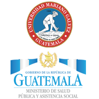

La Universidad Mariano Gálvez de Guatemala es una universidad privada en Guatemala. Su nombre hace referencia al prócer y preclaro jurisconsulto Doctor José Mariano Gálvez (Jefe del Estado de Guatemala 1831-1838), fundador de la Academia de Estudios y reformador de la educación guatemalteca, quien promovió importantes innovaciones en todos los órdenes de la vida del Estado. Luchó por que la enseñanza fuera laica, fue fundador de la Biblioteca y Museo Nacional, respetó las leyes y garantías individuales, libertad de prensa y emisión del pensamiento.
